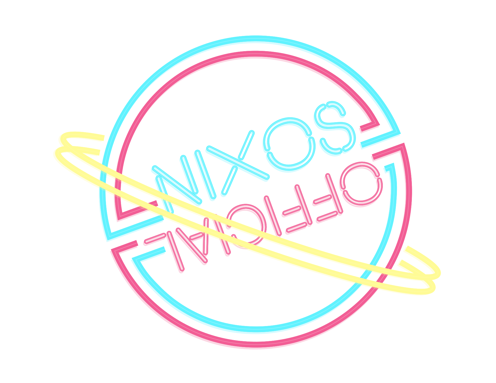

<!doctype html>
<style>
* {
  background: #000;
  color: #fff;

}

body {
  background: url('bg_stars.gif');
}

img {
  width: 5rem;
}

section {
  width: 80%;
  background: black;
}
</style>
<section>
<h1>The official official website of NixOS the wiki</h1>
<h2>According to the Official Official Foundation</h2>
<p>Please do the dishes</p>

<h2>Mission Statement</h2>
Official downstream distribution of the official NixOS foundation.
<h2>Official Official Foundation Board</h2>
<ul>
  <li>Treasurer: Kenji (burned out)</li>
  <li>President: Kenji (burned out)</li>
  <li>Assistant to the General President: Kenji (burned out)</li>
  <li>Bossy Person: badbitch (only if necessary)</li>
  <li>Loud complaining noises: Kranzes (fully energetic)</li>
</ul>
</section>
